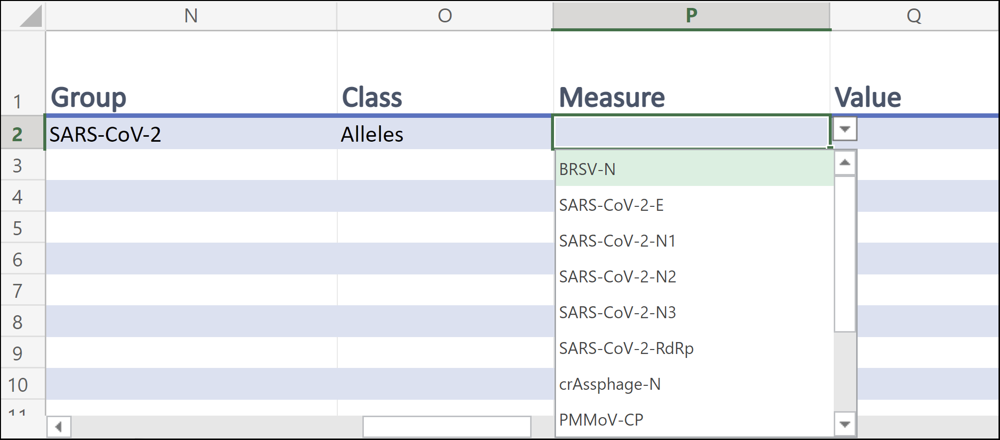
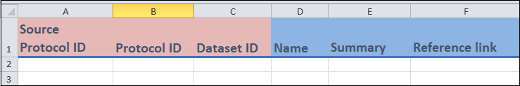
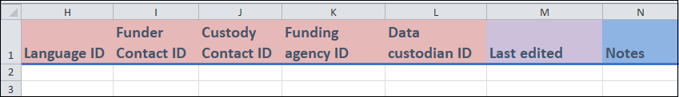
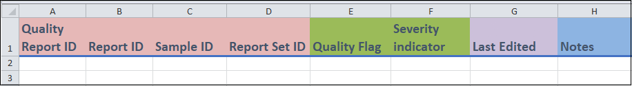

How to use the ODM
How-To guides
1) How to use templates
ODM Excel report templates provide you with an easy way to enter your wastewater and other environmental data into the PHES-ODM format. The templates also serve as an interactive way to get to know the ODM. Below you will find a series of guides that will walk you through how to enter data into the report templates.
In these guides, “field” refers to a column in the template, and “entry” refers to a row of information that you entered. Guides also provide definitions and explanations for some terms; however, more complete information is found in the most can be found in the reference section of the ODM documentation.
The report templates can be found at the OSF.io PHES-ODM reference file folder. More information about the tables can be found in the getting-to-know section.
Briefly,
samplesandmeasurestables are used day-to-day reporting. Information about a sample will be recorded in thesamplestable. Measurements are recorded in themeasurestable. A measure is ‘measurement or observation of any substance including a biological, physical or chemical substance’.There are three optional tables to support reporting samples and measures.
sampleRelationshipsis optional and used only when you have samples that are pooled or split.measureSetsis also an optional table that can be used to link measures together.qualityReportsis used for detailed quality assurance and control measures (you can—and should— record a quality flag attribute for each measure or sample in themeasuresandsamplestables).
Typically, there is one-time initial setup where information is entered the tables with the yellow tabs in the Excel template. These tables include information about
sites,addresses,organizations, andcontacts.sitesis a mandantory table records information about where testing is performed.addresses,organizations, andcontactsprovide the contact information for sites and also other entities such as laboratories, or database custodians.
There are optional supporting tables that include
protocolsandinstrumentswhere you record information about how samples are taken and measures are reported. These tables are usually completed once and then updated when there are changes to the protocol.protocolStepsandprotocolRelationshipstables are part used alongside theprotocolstable. Other supporting tables includepolygonswhere information is store about the sample shed anddatasetswhich includes information about the data custodian and owner of the data.
The templates contain four main types of fields, each with their own for instructional purposes:
- Identifier, unique identifier and composite unique identifier (red): In these fields you will create a value that will be used to identify something. For instance,
Sample IDis used to identify each unique sample. An identifier can be repeated between entries, while an unique identifier cannot. There is usually only one unique identifier per template, and they correspond to the name of the table. e.g.Measure IDfor themeasurestable, andContact IDfor thecontactstable. - Drop-down and conditional drop-down menus (green): These fields have a drop-down menu which contain the values that you can either select or type in. In conditional drop-down menus, the values depend on what you entered in a previous field.
- Date fields (purple): Dates are entered in these fields and must be in the form of the ISO 8601 format:
yyyy-mm-dd. All date fields also support entries for hours, minutes, and seconds:2022-01-01T06:11:54and2022-01-01T06:11:54+13:30 - Free form fields (blue): In these fields, you can enter your data. Any restrictions will be specified in the relevant sections. Keep in mind, different measures may have different data types that can not be validated in Excel. Data types each measure can be checked in the reference list for the measure. For example, the data type for temperature is a real number.
2) How to report Measures and Measure Sets:
In this guide you will learn how to record data in the Measures and Measure Sets table templates. In the Measures table, each row represents a measure. Along the same lines, in the Measure Sets template, each entry will be a collection or set of measures.
Quick Start
Below you will find the mandatory fields for the measures Table. You will also find definitions of terms and examples of entries of data, with all of the fields filled and colour-coded. A more detailed description of some of the key concepts can be found in the following section,Detailed description.
Measures Template
- Mandatory fields
Report ID: Unique identifier for a Measure.Sample ID: Unique identifier for a Sample.Site ID: Unique identifier for the location where a Sample was taken.Analysis Date End: Date the Measure was completed.Measure: A measurement or observation of any substance including a biological, physical or chemical substances.Value: Value of the Measure.Unit: Units of a value.Aggregation: Statistical measures that the Measure represents.Specimen: Substance or thing upon which the observation was made. Specimens include water, air, and surface. The Specimen feild is mandatory if there is more than one specimen type that is collected in database.
Examples
Image will be added
Measure Sets Template
- Mandatory fields
Report Set ID: Unique identifier that links together a group of related Measures.
Examples
Image will be added.
Detailed description
Measures template
Columns A to H

Columns A-C, and E-H
These are the identifier fields.
Report ID(column A) is the unique identifier for this template, and it cannot be repeated. Each Report ID represents a unique measure.The
Report IDcan be any text field up to 30 characters. If you don’t have a method to generate aReport IDyou can use the ODM recommended formula: {Mathew, can you add the formula here}.Other identifiers can be repeated between entries (if needed). For instance, if you enter two different measures from the same sample, then the
Sample ID(column C) will be the same.You may have already created these identifiers in another template. For instance, you may have created
Sample IDin thesamplesTemplate.
Column D
Purpose(optional) has a drop-down menu list. In the list,Regularis the default purpose.
Columns I to M

- Columns I to K
- These are the date fields where you can enter the dates associated with your measure in the format yyyy-mm-dd. Including hours and minutes is optional, but all date-entries use the ISO 8601 format.
2022-01-01T06:11:54or2022-01-01T06:11:54+13:30
- These are the date fields where you can enter the dates associated with your measure in the format yyyy-mm-dd. Including hours and minutes is optional, but all date-entries use the ISO 8601 format.
- Columns L and M
SpecimenandFraction analyzedhave drop-down menus. Both fields are optional, but both are recommended.Specimenis must be included your table has more than one type of specimen. When there is only one specimen, the database table record the specimen type. For example, if yourmeasurestable include only wastewater sample measures, you can indicate this information in thedatabasestable.Fraction analyzedapplies only for water and wastewater samples. You should record the fraction for all samples if they are component type water or wastewater.
- Columns I to K
Columns N to S
- Columns N and O
GroupandClasshelp organizeMeasuresto make a specific measure easy to find. The fields have drop-down menus. Both fields are optional and used only if you need help finding aMeasure.For example, to find the allele measures for SARS-CoV-2 you can start by selecting
SARS-CoV-2in theGroupcolumn. Next, you selectAllelein theClasscolumn. Then, you’ll see the drop-down in theMeasurecolumn that contains SARS-CoV-2 allele regions.
Leave these fields blank if you do not use them.
- Column P
Measureis where you select what is being measured. A measure in ODM is a ‘measurement or observation of any substance including a biological, physical or chemical substance.’Measurehas a conditional drop-down menu. See above section onGroupandClass.If you chose to enter in a
Class(column O), the drop down menu will contain theMeasuresfound in thatClass. If you did not enter a value in column O, the menu will contain all possibleMeasures.
- Column Q - This where you will enter in the value of your
Measure. - For instance, if yourMeasureis a temperature of 20 oC, you would enter “20”. - Note: Excel accepts any data type can be entered in theMeasurecolumn. However, eachMeasurehas a specific data type. Data types can be found in the reference documentation for each measure. For example, the data type for temperature can be found here. - Column R
Unitsis where you enter the unit for your measure. There is a conditional drop-down list of the units that are valid for the measure in column P. For example, if the measure is[Storate temperature](../parts.qmd#sTemp), the only unit displayed isCelcsius.
- Column S
Aggregationsis where you enter the aggregation of your value. There is a conditional drop-down menu field which contains the types of aggregations of your value. For example does your value represent a mean, median, etc.What appears in this menu list depends on what you entered in the Unit field (column R).
- Columns N and O
Columns T to AA

- Columns U, V and AA
Index(column U) is used if you have multiple entries with the exact same values in the other fields. If this is the case you could use “1”, “2”, etc. to differentiate them.Measure license(column V) refers to the access and use licensing of the measure that you are entering.
- Column T and W
Reportable(column W) is where you can indicate if there are quality concerns with the measure and the measure should not be used for regular reporting. More details of the quality concerns can be recorded in thequality setstable. There is a drop down list this field.
- Column X and Y
- These are identifier fields that are used to indicate the
OrganizationandContactassociated with the entry.
- These are identifier fields that are used to indicate the
- Column Z
Last editedfield is where you indicate the date when the entry was updated. The field is used if you need to modify an entry (row) after your initial recording. You can leave this field blank if the measure was entered with no updates. Meaning, use this field only when you modify the entry (row).
- Columns U, V and AA
Measure Sets Template
Columns A to G
NOTE: this figure needs to be update with the correct labels.
Columns A, B, D and E
- These are all Identifier fields.
- Report Set ID (column A) is the Unique Identifier for this template, and cannot be repeated between entries. In essence, each value of Report Set ID represents a unique Measure Set.
- For the rest, you can repeat the Identifier between entries (if needed). For instance, if you are entering two different Measure Sets that came from the same Organization, then the Organization ID (column D) will be the same.
- You may have already created these Identifiers in another template. For instance you may have created Organization ID in the Organizations Template.
Columns C and G
- These are Free Form fields in which you will enter the indicated information. Name (column C) refers to the name that you have given to the Measure Set.
Column F
- This is a Date field in which you can enter in the date when the entry was updated.
You have now entered your data in the Measures and Measure Sets Template, congratulations!
3) How to report Samples and Sample Relationships:
In this guide you will learn how to enter Samples and Sample Relationships into their respective templates. In the Samples template, each entry represents a Sample. A Sample is the wastewater that you collected so that Measures can be made. .Along the same lines, each entry in the Sample Relationships represents an interaction (or Relationship) between two Samples in the form, Subject - Relationship - Object. So, to specify that Sample A is a field sample replicate of Sample B, you would enter “Sample A” - “Field Sample Replicate” - “Sample B”
You can find additional information regarding terms and the colour-coding of columns at the beginning of this guide (1) How to use templates) and
Quick Start
Below you will find the fields that are mandatory for the Samples and Sample Relationships template. You will also find some examples of entries of data, with the all of the fields filled and colour-coded. A more detailed description of some of the key concepts can be found in the following section, Detailed Description.
Samples Template
- Mandatory fields
| Sample ID | Site ID |
|---|---|
| Sample Material | Sample Collection Type |
| Collection Period | Collection Number |
| Collection Date Time |
- Definitions
Sample ID: Unique identifier for a Sample.
Site ID: Unique identifier for the location where a wastewater sample was taken.
Sample Material: Type of Sample.
Sample Collection Type: Method used to collect the Sample.
Collection Period: The time period over which the Sample was collected, in hours.
Collection Number: The number of subsamples that were combined to create the Sample. Use NA for continuous, proportional or passive sampling.
Collection Date Time: The date, time and time zone the sample was taken.
Examples
to be added
Sample Relationships Template
- Mandatory fields
| Sample ID Object | Relationship |
|---|---|
| Sample ID Subject |
- Definitions
Sample ID Object: The Object (or one of the samples) of a relationship between two Samples. This will always be a Sample ID that was previously created in the Samples Template.
Relationship: Describes relationship between two Samples.
Sample ID Subject: The Subject (or one of the samples) of a relationship between two Samples. This will always be a Sample ID that was previously created in the Samples Template.
Examples
Examples will be added
Detailed Description
Samples Template
Columns A to G

Columns A to E:
These are Identifier fields.
Sample ID (column A) is the Unique Identifier for this template and cannot be repeated between entries. You can think of each Sample ID value as representing a unique Sample.
For the rest of the fields, you can repeat values between entries. For instance, if you are entering two different Samples from the same Site, then the Site ID (column E) will be the same.
You may have already created these Identifiers in another template. For instance you may have created Site ID in the Sites Template.
Columns F to G:
- These are Drop-down Menu fields where you can enter information regarding the Purpose and Sample Material of your Sample.
Columns H to N

- Columns H:
- These is an Identifier field for the Dataset that your Sample is associated with.
- Columns I to K, N:
These are Drop-down Menu fields related to various characteristics of your Sample.
Sample Collection Type (column K) refers to the collection technique you used to obtain the Sample.
Pooled (column N) refers to whether or not the Sample that you are entering is made up of multiple child Samples.
- Columns L and M:
- These are Free Form fields.
- Collection Period (column L) refers to the number of hours that it took to collect your Sample.
- Collection Number (column M) refers to the number of subsamples that were used to create Sample that you are entering.
- Columns H:
Columns O to V

- Columns O to S, U:
- These are Date fields that are related to various dates associated with your Sample. These dates will be in the format dd/mm/yyyy.
- Column T:
- This is a Drop-down Menu field (Reportable Data Flag) where you can indicate whether or not your entry is of a good enough quality that it can be used by others.
- Column V:
- This is a Free Form field where you can indicate anything of interest..
- Columns O to S, U:
Sample Relationships Template
Columns A to E

Columns A and C:
These are Identifier fields.
Both of these Identifiers are Sample IDs and represent Samples. You would have created them previously in the Samples Template. Note that neither of them are Unique Identifiers and, thus, can be repeated between entries.
Columns B:
- This is a Drop-down Menu field, where you can select the type of relationship between two Samples. For instance, if Sample B was a child of Sample A, you would put the Sample ID of Sample A in the Sample ID Subject field (column A), and the Sample ID of Sample B in Sample ID Object field (column C). Then you would chose “Child relationship” from the menu in this column.
Columns D and E:
- These are a Date field (column D) and a Free Form field (column E) where you can enter in the indicated information.
You have now entered your data in the Samples Template, congratulations!
4) How to report Protocols, Protocol Steps and Protocol Relationships:
In this guide you will learn how to enter Protocols, Protocol Steps and Protocol Relationships into their respective templates. As described in , a Protocol is “A procedure for collecting a sample or performing a measure”. Each entry in the Protocols Template represents a unique Protocol. A Protocol is made up of Protocol Steps. In the Protocol Steps Template, each entry is one of these steps. Finally, Protocols and Protocols can be linked to each other. Each entry in the Protocol Relationships Template represents one of these relationships in the form, Subject - Relationship - Object. So, for example, to specify that Protocol Step A needs to be done before Protocol Step B, you would enter “Protocol Step A” - “is Before” - “Protocol Step B”. .
You can find additional information regarding terms and the colour-coding of columns at the beginning of this guide (1) How to use templates) and
Quick Start
Below you will find the fields that are mandatory for the Protocols, Protocol Steps and Protocol Relationships templates. You will also find some examples of entries of data, with all of the fields filled and colour-coded. A more detailed description of some of the key concepts can be found in the following section, Detailed Description.
Protocol Steps Template
- Mandatory fields
| Protocol Step ID | Method (if entry is a Method) |
| Measure (if entry is a Measure) | Value (if entry is a Measure) |
| Aggregation (if entry is a Measure) | Unit (if entry is a Measure) |
- Definitions
Protocol Step ID: Unique identifier for a Protocol Step.
Measure: A measurement or observation of any substance including a biological, physical or chemical substance.
Method: A procedure for collecting a sample or performing a Measure.
Value: Value of the entry.
Aggregation: Statistical measures used to report a Measure.
Unit: The units of a Measure.
Examples
Image will be added
Protocols Template
- Mandatory fields
| Protocol ID |
- Definitions
- Protocol ID: A unique identifier for a given Protocol.
- Examples
Image will be added
Protocol Relationships Template
- Mandatory fields
| Protocol ID Container | Relationship |
| Protocol ID Subject (if subject is a Protocol) | Protocol Step ID Subject (if subject is a Protocol Step) |
| Protocol ID Object (if object is a Protocol) | Protocol Step ID Object (if object is a Protocol Step) |
- Definitions
Protocol ID Container: Unique identifier for a Protocol and the Steps and other Protocols that make it up.
Relationship: Describes relationship between the Subject and Object.
Protocol ID Subject: The Subject of a Relationship between a Protocol and a Protocol Step or Protocol.
Protocol Step ID Subject: The Subject of a Relationship between a Protocol Step and a Protocol Step or Protocol.
Protocol ID Object: The Object of a Relationship between a Protocol and a Protocol Step or Protocol.
Protocol ID Step Object: The Object of a Relationship between a Protocol Step and a Protocol Step or Protocol.
- Examples
Image will be added
Detailed Description
Protocol Steps Template
Columns A to G

- Column A:
- Protocol Step ID (column A) is the Unique Identifier field for this template and cannot be repeated between entries. You can think of each Protocol Step ID value as representing a unique Protocol Step.
- Columns B to C:
These are Drop-down Menu fields.
You only need to enter a value into Method ID (column B) or Measure ID (column C). The former is for when you are entering a Method as a Protocol Step. The latter is when you are entering a Measure as a Protocol Step. Leave the other field blank.
- Columns D to G:
- These are Free Form fields and you can enter the relevant information in any format that you wish.
- Summary (column D) is a short description of the Protocol Step that you are entering.
- Protocol Step Source (column E) specifies the Protocol Step which serves as a basis for the given Protocol Step.
- Protocol Step Version (column F) specifies the version of a given Protocol Step.
- Column A:
Columns H to O

- Columns H to J:
- These are Identifier fields.
- You can repeat values between entries. For instance, if you are entering two different Protocol Steps from the same Organization, then the Organization field (column H) will be the same.
- Column K:
- A Free Form field in which you will enter the Value of a Measure. If a Method is being entered, then you can put “NA” here.
- Columns L and M:
- These are Conditional Drop-down Menu fields.
- Unit (column L) depends on what you entered in Measure ID (column C). If you entered a Method, then you can put “NA” in this field.
- Aggregation (column M) depends on what you entered in Unit (column L). If you entered a Method, then you can put “NA” in this field.
- Columns N and O:
- These are Free Form fields where you can enter the indicated information.
- Columns H to J:
Protocols Template
Columns A to F

- Columns B and C:
- These are Identifier fields.
- Protocol ID (column B) is the Unique Identifier for this template, and cannot be repeated between entries. In essence, each value of Protocol ID represents a unique Protocol.
- For Dataset ID, you can repeat between entries (if needed). For instance, if you are entering two different Protocols from the same Dataset, then the Dataset ID (column C) will be the same.
- You may have already created the Dataset IDs in the Datasets Template.
- Columns A, D to F:
- These are Free Form fields in which you can enter the indicated information.
- Source Protocol (column A) is where you can indicate the Protocol that served as the basis for the Protocol that is currently being entered.
- Name (column D) refers to the Name that you have decided to give your Protocol.
- Columns B and C:
Columns G to K

- Columns G, H:
- These are Identifier fields. You can repeat values between entries.
- Columns I, K:
- These are Free Form fields and you can enter the relevant information in any format that you wish.
- You can use the Protocol Version field (column I) to indicate the version of the Protocol that you are entering.
- Columns J:
- This is a Date field where you can indicate when the entry was updated.
- Columns G, H:
Protocol Relationships Template
Columns A to H

Columns A to C, E and F:
These are Identifier fields.
All of these Identifiers are either Protocol IDs or Protocol Step IDs and represent Protocols and Protocol Steps, respectively. This includes Protocol ID Container (column A), which represents the Protocol that contains the relationships that you are entering in this template. Note that none of these fields are Unique Identifiers and, thus, can be repeated between entries.
You should only enter in a value for one of the two “Object” columns (column B and C); this depends on whether the Object of the relationship that you are entering is a Protocol or a Protocol Step. The same is true for the two “Subject” columns (column E and F).
An example will be given in point (ii) below.
Columns D:
- This is a Drop-down Menu field, where you can select the type of Relationship that is being entered.
- For example, say you wanted to enter in a Relationship stating that Protocol Step A takes place before Protocol Step B in a particular Protocol Container. You would enter the relevant Identifiers in the Step ID Object field (column B) and the Step ID Subject field (column F). You would then select “is Before” from the Relationship field. Finally, to identify this relationship, you would enter in the Identifier in the Protocol ID Container field (column A)
Columns G and H:
- These are a Date field (column D) and a Free Form field (column E) where you can enter in the indicated information.
You have now entered your data in the Protocol Steps, Protocols and Protocol Relationships Template, congratulations!
5) How to report Metadata:
In this guide you will learn how to enter Metadata through a series of templates. Each entry in a template will usually represent what is found in the title of the template. For instance, in the Organizations template each row will represent an Organization. In the context of the PHES-ODM, metadata is anything that gives information that is not found in the templates related to Measures, Protocols and Samples.
You can find additional information regarding terms and the colour-coding of columns at the beginning of this guide (1) How to use templates) and
Quick Start
Below you will find the fields that are mandatory for the metadata-related templates. You will also find some examples of entries of data, with the fields filled and colour-coded. A more detailed description of some of the key concepts can be found in the following section, Detailed Description.
Addresses Template
- Mandatory fields
| Address ID | Dataset ID |
| Address Line 1 | City |
| State, Province or Region | Country |
Address ID: A unique identifier for an Address.
Dataset ID: The name of the Dataset that stores information for Measures, Samples and other reporting tables.
Address Line 1: Line 1 (the street name, number and direction) for a given Address.
City: The city where a Site or Organization is located; part of the Address.
State, Province or Region: The state, province, or region where a Site or Organization is located; part of the Address.
Country: The country where a Site or Organization is located; part of the Address.
- Examples
Images will be added
Contacts Template
- Mandatory fields
| Contact ID | Organization ID |
| Contact email |
Contact ID: A unique identifier for a given contact person.
Organization ID: A unique identifier for the Organization to which the reporter is affiliated.
Email: Contact e-mail address, for the labs.
- Examples
Images will be added
Datasets Template
- Mandatory fields
| Dataset ID | License |
| Data Custodian |
Dataset ID: A unique identifier for the Dataset that stores information.
License: The license of the Dataset.
Data Custodian: The data custodian(s) of the database.
- Examples
Images will be added
Instruments Template
- Mandatory fields
| Instrument ID | Dataset ID |
| Model | Instrument Type |
Instrument ID: A unique identifier for an Instrument.
Dataset ID: The name of the Dataset that stores information for Measures, Samples and other reporting tables.
Model: Model number or version of the Instrument.
Type of Instrument used to perform the measurement.
- Examples
Images will be added
Organizations Template
- Mandatory fields
| Organization ID | Address ID |
| Organization Type |
- Organization ID: A unique identifier for the Organization to which the reporter is affiliated.
- Address ID: A unique identifier for an Address.
- Organization Type: Specifies the type or purpose of a given Organization.
- Examples
Images will be added
Polygons Template
- Mandatory fields
| Polygon ID | Type of Geography |
| Well-known text | European Petroleum Survey Group Coordinates |
- Polygon ID: Unique identifier for the Polygon.
- Type of Geography: Type of geography that is represented by the Polygon.
- Well-known text: Well-known text of the Polygon.
- European Petroleum Survey Group Coordinates: The unique EPSG code specifying a given geospatial area.
- Examples
Images will be added
Quality Reports Template
- Mandatory fields
| Quality Report ID | Report ID (if entry is related to a Measure) |
| Sample ID (if entry is related to a Sample) | Report Set ID (if entry is related to a Measure in a Measure Set) |
| Quality Flag |
- Quality Report ID: A unique identifier for a given Quality Report.
- Report ID: Unique identifier for a Measure.
- Sample ID: Unique identifier for a Sample.
- Report Set ID: Unique identifier that links together a group of related Measures.
- Quality Flag: A field for reporting any quality concerns - of lack thereof - for a Sample or Measure.
- Examples
Images will be added
Sites Template
- Mandatory fields
| Site ID | Site Type |
| Sample shed | Contact ID |
| Latitude | Longitude |
| European Petroleum Survey Group Coordinates |
- Site ID: Unique identifier for the location where wastewater sample was taken.
- Site Type: Type of Site where sample was taken.
- Sample shed: A geographic area, physical space, or structure. A Sample is taken from a sample shed for a representative measurement of a substance(s).
- Contact ID: A unique identifier for a given contact person.
- Latitude: Latitude in decimal coordinates of the Site.
- Latitude: Longitude in decimal coordinates of the Site.
- European Petroleum Survey Group Coordinates: The unique EPSG code specifying a given geospatial area.
- Examples
Images will be added
Detailed Description
Addresses Template
Columns A to E

Columns A and B:
These are Identifier fields.
Address ID (column A) is the Unique Identifier for this template, and cannot be repeated between entries. In essence, each value of Address ID represents a unique Address.
For Dataset ID (column B), you can repeat the value between entries (if needed). For instance, if you are entering two different Addresses from the same Dataset, then this column will be the same.
You may have already created the Dataset ID in the Datasets Template.
Columns C to E:
- These are Free Form fields in which you can enter various information regarding the Address.
Columns F to J
Columns F to J:
- Most of these fields are Free Form in which you can enter various information regarding the Contact.
- Update Date - Last Edited (column I) is a date field.
Contacts Template
Columns A to E
Columns A to C:
These are Identifier fields.
Contact ID (column A) is the Unique Identifier for this template, and cannot be repeated between entries. In essence, each value of Contact ID represents a unique Contact.
For the rest, you can repeat the Identifier between entries (if needed). For instance, if you are entering two different Contacts that came from the same Organization, then the Organization ID (column C) will be the same.
You may have already created these Identifiers in another template. For instance you may have created Organization ID in the Organizations Template.
Columns D and E:
- These are Free Form fields in which you can enter the name of the Contact.
Columns F to J
Columns F to J:
- Most of these fields are Free Form in which you can enter various information regarding the Contact.
- Update Date - Last Edited (column J) is a date field.
Datasets Template
Columns A to G

Columns A and B:
These are Identifier fields.
Dataset ID (column B) is the Unique Identifier for this template, and cannot be repeated between entries. In essence, each value of Dataset ID represents a unique Dataset.
For Parent Dataset ID (column A), you can repeat the value between entries (if needed). For instance, if you are entering two different Datasets that came from the same Parent Dataset, then the Parent Dataset ID will be the same.
Column C
- This is a Date field where you can enter the date that the Dataset was created.
Columns D to G:
- These are Free Form fields in which you can enter various information related to the Dataset.
Columns H to N

Columns H to L:
- These are Identifier and Free Form fields.
- For information regarding Funders, you can enter their ID and Name in Funder Contact ID and Funding Agency, respectively (columns H and J).
- For information regarding Data Custodians, you can enter their ID and name in Custody Contact ID and Data Custodian, respectively (columns I and K).
Columns M and N:
- These are a Date field (column L) and a Free Form field (column M) where you can enter in the indicated information.
Instruments Template
Columns A to G
- Columns A, B, F and G:
These are Identifier fields.
Instrument ID (column A) is the Unique identifier for this template, and cannot be repeated between entries. In essence, each Instrument ID represents a unique Instrument.
For the rest of the columns, you can repeat the value between entries (if needed). For instance, if you are entering two different Instruments from the same Dataset, then this column will be the same.
You may have already created some of the Identifiers in other Templates. For instance, you may have already created Dataset ID in the Datasets template.
- Columns C to E
- These are Free Form fields where you can enter the Name (column C), Model (column D) and Manufacturer (column E) of the Instrument.
- Columns A, B, F and G:
Columns H to N

- Columns H, I, L to N:
- Most of these fields are Free Form in which you can enter relevant information regarding your Instrument
- You can use Index (column L) to differentiate two entries of data that are the same in the other fields.
- Update Date - Last Edited (column M) is a date field.
- Columns J and K:
For Instrument Type (column J), you can select from the drop-down menu the type of Instrument. If you do not see your Instrument, you can enter “Other instrument type”
If you entered “Other instrument type” in the Instrument Type field, you can use the Describe Other Instrument type, If Applicable field (column K) to describe your Instrument.
- Columns H, I, L to N:
Organizations Template
Columns A to H

- Columns A and C:
These are Identifier fields.
Organization ID (column A) is the Unique identifier for this template, and cannot be repeated between entries. In essence, each Organization ID represents a unique Organization.
For the rest of the columns, you can repeat the value between entries (if needed). For instance, if you are entering two different Organizations from the same Address, then this column will be the same.
You may have already created some of the Identifiers in other Templates. For instance, you may have already created the Address ID in the Addresses Template.
- Columns D to H:
- For Organization Type (column D), you can select from the menu the type of Organization that you are entering.
- The rest of the columns contain Free Form or Date fields in which you can enter additional information regarding the Organization.
- Columns A and C:
Polygons Template
Columns A to G

- Columns A and B:
These are Identifier fields.
Polygon ID (column A) is the Unique identifier for this template, and cannot be repeated between entries. A Polygon is an area on a map. Each Polygon ID represents a unique Polygon.
For Dataset ID (column B), you can repeat the value between entries (if needed). For instance, if you are entering two different Polygons from the same Dataset, then this column will have the same value.
You may have already created the Dataset ID in the Datasets Template.
- Columns C to E, G:
- These are Free Form fields in which you can enter additional information regarding the Polygon.
- Name (column C) is the name of the Polygon.
- European Petroleum Survey Group Coordinates (column G) is a coordinate system that can be used to identify where your Polygon is.
- Columns F:
- For Type of geography (column F) of the Polygon, you can select one of the values from the drop-down menu.
- Columns A and B:
Columns H to N

- Columns H to J and N:
These are Free Form or Date fields in which you can enter relevant information regarding the Polygon.
Well-known text (column H) refers to the text markup language that can be used to represent the Polygon (
- Columns K and L:
- These are Identifier fields in which the Organization ID and the Contact ID associated with the Polygon are entered.
- Columns H to J and N:
Quality Reports Template
Columns A to H

- Columns A to D:
These are Identifier fields.
Quality Report ID (column A) is the Unique identifier for this template, and cannot be repeated between entries. In essence, each Quality Report ID represents a unique quality issue that you want to report.
For the rest of the columns, you can repeat the value between entries (if needed). For instance, if you are entering two different Quality Reports from the same Sample, then the Sample IDs will be the same.
You may have already created some of the Identifiers in other Templates. For instance, you may have already created Sample ID in the Samples template.
- Columns E and F:
- Quality Flag (column E) is a Drop-down Menu field where you can select the type of quality issue that you would like to enter.
- You can indicate the severity of the Quality Flag in the Severity Indicator field (column F).
- Columns G and H:
- These are a Free Form field and Date field in which you can enter the indicated information.
- Columns A to D:
Sites Template
Columns A to F

- Columns A to C, and F:
These are Identifier fields.
Site ID (column B) is the Unique identifier for this template, and cannot be repeated between entries. In essence, each Sites ID represents a unique Site.
For the rest of the columns, you can repeat the value between entries (if needed). For instance, if you are entering two different Sites that are found in the same Polygon, then the Polygon IDs will be the same.
Parent Site ID (column A) refers to the Site that is parent to the Site that is being entered. For example if the Site that is being entered is a room in a LTC facility, that the Parent Site ID would refer to the LTC facility.
- Columns D to E:
- These are Drop-down Menu fields in which you can specify the Site Type (column D) and the type of Sample shed (column E).
- Columns A to C, and F:
Columns G to M

- Columns G to I:
- These are Identifier fields for additional information that are asociated with the Site.
- Columns J to M:
- These are all Free Form fields in which you can enter in relevant information about your Site.
- Public Health Department or Region (column L) and Health Region (column M), refers to the Department or Region where your Site is located.
- Columns G to I:
Columns N to S

- Columns N to S:
- These are Free Form fields and a Date field in which you can enter in additional information of your Site.
- European Petroleum Survey Group Coordinates (column Q) is a coordinate system that can be used to identify where your Site is.
- Columns N to S:
You have now entered in your Metadata, congratulations!